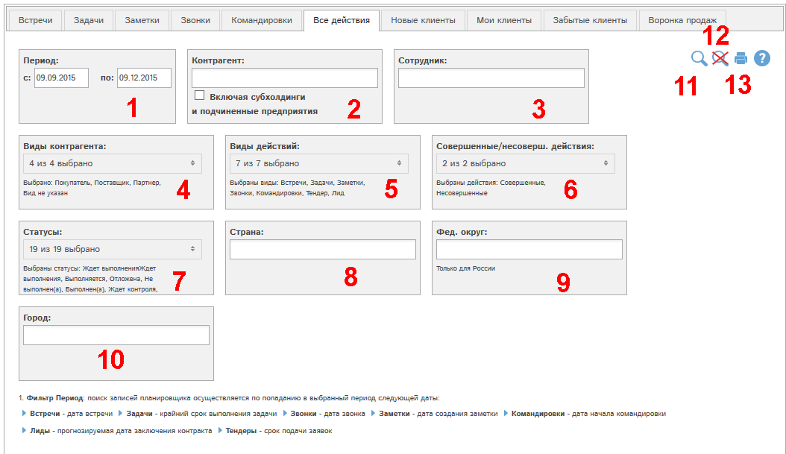
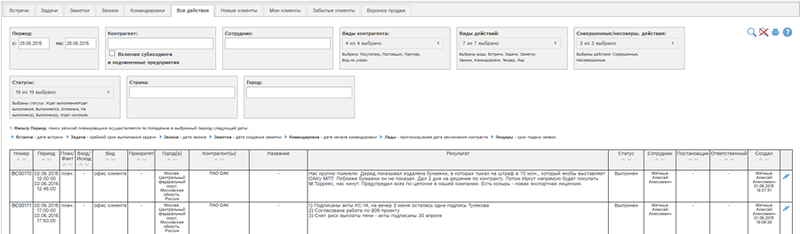

Отчет позволяет получить данные о всех записях планировщика, связанных с выбранными контрагентом (группой контрагентов) и/или сотрудником (группой сотрудников).

Рис. Форма отчета Все действия.
Доступны следующие фильтры и кнопки:
- Период - записи отбираются по следующим датам:
- Встречи - дата встречи
- Задачи - крайний срок выполнения задачи
- Звонки - дата звонка
- Заметки - дата создания заметки
- Командировки - дата начала командировки
- Отбор по связанному контрагенту (или группе контрагентов). Галочка "Включая субхолдинги и подчиненные предприятия" позволяет выбрать в отчет также данные по субхолдингам и подчиненным предприятиям выбранных контрагентов.
- Отбор по связанному сотруднику (или группе сотрудников)
- Отбор по виду связанных контрагентов
- Отбор по виду записей планиировщика
- Отбор по совершенным/не совершенным действиям:
- Совершенные действия:
- Задачи - утверждено выполнение
- Звонки - утверждено выполнение
- Встречи - утвержден прием работы
- Командировки - утвержден прием работы
- Все остальные действия считаются не совершенными.
- Отбор по статусам записей
- Отбор по стране контрагентов
- Отбор по федеральному округу контрагентов. Функция доступна только для России. При выборе федерального округа автоматически выбирается страна Россия.
- Отбор по городу контрагентов
- Показать отчет по выбранным фильтрам
- Сбросить все фильтры
- Получить печатную версию отчета по выбранным фильтрам в pdf-формате.
Рассмотрим пример отчета со значениями фильтров по умолчанию. Для этого нажмем кнопку  :
:

По всем основным колонкам отчета доступна сортировка. Для сортировки по определенной колонке кликните по кнопке  или
или  в соответствующей колонке таблицы.
в соответствующей колонке таблицы.